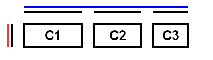
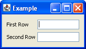

- java.lang.Object
-
- javax.swing.GroupLayout
-
- All Implemented Interfaces:
-
LayoutManager，LayoutManager2
public class GroupLayout extends Object implements LayoutManager2
GroupLayout是一个LayoutManager，用于对组件进行分层分组，以便将它们放置在一个Container。GroupLayout旨在供建筑商使用，但也可以手工编码。 分组是由Group类的实例完成的。GroupLayout支持两种类型的组。 一个顺序组按顺序依次定位其子元素。 并行组以四种方式之一对齐其子元素。每个组可包含任意数量的元素，其中的元素是
Group，Component，或间隙。 间隙可以被认为是具有最小，优选和最大尺寸的不可见成分。 此外，GroupLayout支持优先缺口，其值来自LayoutStyle。元素类似于春天。 每个元素具有由最小值，优选值和最大值指定的范围。 间隙具有开发者指定的范围，或由
LayoutStyle确定的范围。 范围为ComponentS从确定Component的getMinimumSize，getPreferredSize和getMaximumSize方法。 另外，当添加Components时，您可以指定要使用的特定范围而不是组件的范围。Group的范围由组的类型决定。ParallelGroup的范围是其元素范围的最大值。SequentialGroup的范围是其元素范围的总和。GroupLayout独立对待每个轴。 也就是说，存在表示水平轴的组和表示垂直轴的组。 水平组负责确定沿水平轴的最小尺寸，优选尺寸和最大尺寸，以及设置其中包含的组件的x和宽度。 垂直组负责确定沿垂直轴的最小尺寸，最小尺寸和最大尺寸，以及设置其中包含的组件的y和高度。 每个Component必须存在于水平和垂直组中，否则在布局期间抛出IllegalStateException，或者要求最小，优选或最大大小时。下图显示沿水平轴的顺序组。 顺序组包含三个组件。 沿垂直轴使用平行组。

为了加强每个轴的独立处理，该图显示了每个轴和每个轴上的每个组的范围。 每个组件的范围已投影到轴上，组将呈现为蓝色（水平）和红色（垂直）。 为了可读性，顺序组中的每个元素之间存在间隙。
沿着水平轴的顺序组呈现为实线蓝线。 注意顺序组是它包含的子元素的总和。
沿着垂直轴，平行组是每个部件的最大高度。 由于所有三个部件具有相同的高度，平行组具有相同的高度。
下图显示了相同的三个组件，但沿着水平轴的平行组和沿垂直轴的顺序组。

由于
c1是三个组件中最大的，并行组的大小为c1。 由于c2和c3小于c1它们将基于为组件（如果指定）指定的对齐方式或并行组的默认对齐方式对齐。 在图c2和c3中创建的对齐方式为LEADING。 如果组件方向从右到左，则c2和c3将位于相对侧。下图显示了沿水平轴和垂直轴的顺序组。

GroupLayout提供了在Component之间插入间隙的能力。 差距的大小由LayoutStyle的实例确定。 这可以使用setAutoCreateGaps方法打开。 类似地，您可以使用setAutoCreateContainerGaps方法在接触父容器和容器边缘的组件之间插入间隙。以下构建一个由一列中的两个标签组成的面板，后面是两列文本框：
JComponent panel = ...; GroupLayout layout = new GroupLayout(panel); panel.setLayout(layout); // Turn on automatically adding gaps between components layout.setAutoCreateGaps(true); // Turn on automatically creating gaps between components that touch // the edge of the container and the container. layout.setAutoCreateContainerGaps(true); // Create a sequential group for the horizontal axis. GroupLayout.SequentialGroup hGroup = layout.createSequentialGroup(); // The sequential group in turn contains two parallel groups. // One parallel group contains the labels, the other the text fields. // Putting the labels in a parallel group along the horizontal axis // positions them at the same x location. // // Variable indentation is used to reinforce the level of grouping. hGroup.addGroup(layout.createParallelGroup(). addComponent(label1).addComponent(label2)); hGroup.addGroup(layout.createParallelGroup(). addComponent(tf1).addComponent(tf2)); layout.setHorizontalGroup(hGroup); // Create a sequential group for the vertical axis. GroupLayout.SequentialGroup vGroup = layout.createSequentialGroup(); // The sequential group contains two parallel groups that align // the contents along the baseline. The first parallel group contains // the first label and text field, and the second parallel group contains // the second label and text field. By using a sequential group // the labels and text fields are positioned vertically after one another. vGroup.addGroup(layout.createParallelGroup(Alignment.BASELINE). addComponent(label1).addComponent(tf1)); vGroup.addGroup(layout.createParallelGroup(Alignment.BASELINE). addComponent(label2).addComponent(tf2)); layout.setVerticalGroup(vGroup);运行时产生以下内容。

此布局包括以下内容。
- 横轴由包含两个并行组的连续组组成。 第一个并行组包含标签，第二个并行组包含文本字段。
- 垂直轴由包含两个平行组的顺序组成。 这些并行组被配置成沿着基线对准其组件。 第一个并行组包含第一个标签和第一个文本字段，第二个组由第二个标签和第二个文本字段组成。
- 您不需要明确地将组件添加到容器中; 这是间接通过使用
add方法之一的Group。 - 各种
add方法返回调用者。 这样可以方便地链接调用。 例如，group.addComponent(label1).addComponent(label2);相当于group.addComponent(label1); group.addComponent(label2);。 - 没有公共建设者
Groups; 而是使用create方法GroupLayout。
- 从以下版本开始：
- 1.6
-
-
Nested Class Summary
Nested Classes Modifier and Type Class 描述 static classGroupLayout.Alignment枚举可能的方式ParallelGroup可以对ParallelGroup。classGroupLayout.GroupGroup为GroupLayout支持的两种类型的操作提供了基础：一个接一个地布置组件（SequentialGroup）或对齐（ParallelGroup）。classGroupLayout.ParallelGroupAGroup对齐和调整它的孩子的大小。classGroupLayout.SequentialGroupAGroup依次顺序地定位和调整其元素的大小。
-
Field Summary
Fields Modifier and Type Field 描述 static intDEFAULT_SIZE表示组件或间隙的尺寸应用于特定范围值。static intPREFERRED_SIZE表示组件或间隙的首选尺寸应用于特定范围值。
-
构造方法摘要
构造方法 Constructor 描述 GroupLayout(Container host)创建GroupLayout为指定Container。
-
方法摘要
所有方法 接口方法 具体的方法 Modifier and Type 方法 描述 voidaddLayoutComponent(Component component, Object constraints)通知已将Component添加到父容器。voidaddLayoutComponent(String name, Component component)通知已将Component添加到父容器。GroupLayout.ParallelGroupcreateBaselineGroup(boolean resizable, boolean anchorBaselineToTop)创建并返回一个ParallelGroup，使其沿着基线的元素对齐。GroupLayout.ParallelGroupcreateParallelGroup()创建并返回ParallelGroup，对齐方式为Alignment.LEADING。GroupLayout.ParallelGroupcreateParallelGroup(GroupLayout.Alignment alignment)创建并返回具有指定对齐方式的ParallelGroup。GroupLayout.ParallelGroupcreateParallelGroup(GroupLayout.Alignment alignment, boolean resizable)创建并返回具有指定对齐和调整大小行为的ParallelGroup。GroupLayout.SequentialGroupcreateSequentialGroup()创建并返回一个SequentialGroup。booleangetAutoCreateContainerGaps()返回true如果容器和容器边界的组件之间的间隙自动创建。booleangetAutoCreateGaps()如果自动创建组件之间的间隙，则返回true。booleangetHonorsVisibility()返回在确定组件的大小和位置时是否考虑组件可见性。floatgetLayoutAlignmentX(Container parent)返回沿x轴的对齐方式。floatgetLayoutAlignmentY(Container parent)返回沿着y轴的对齐。LayoutStylegetLayoutStyle()返回用于计算组件之间的首选间隙的LayoutStyle。voidinvalidateLayout(Container parent)使布局无效，指示如果布局管理器已缓存信息，则应将其丢弃。voidlayoutContainer(Container parent)放出指定的容器。voidlinkSize(int axis, Component... components)强制指定的组件沿指定的轴具有相同的大小，而不管其首选，最小或最大尺寸。voidlinkSize(Component... components)强制指定的组件具有相同的大小，无论其首选，最小或最大大小如何。DimensionmaximumLayoutSize(Container parent)返回指定容器的最大大小。DimensionminimumLayoutSize(Container parent)返回指定容器的最小大小。DimensionpreferredLayoutSize(Container parent)返回指定容器的首选大小。voidremoveLayoutComponent(Component component)通知已从父容器中删除Component。voidreplace(Component existingComponent, Component newComponent)用新的组件代替现有组件。voidsetAutoCreateContainerGaps(boolean autoCreateContainerPadding)设置是否自动创建容器和组件之间接触容器边界的间隙。voidsetAutoCreateGaps(boolean autoCreatePadding)设置是否自动创建组件之间的间隙。voidsetHonorsVisibility(boolean honorsVisibility)设置在组件尺寸和定位时是否考虑组件可见性。voidsetHonorsVisibility(Component component, Boolean honorsVisibility)设置组件的可见性是否考虑到尺寸和定位。voidsetHorizontalGroup(GroupLayout.Group group)设置Group位置和大小沿水平轴的组件。voidsetLayoutStyle(LayoutStyle layoutStyle)设置LayoutStyle用于计算组件之间的首选间隙。voidsetVerticalGroup(GroupLayout.Group group)设置Group位置和尺寸沿垂直轴的部件。StringtoString()返回此GroupLayout的字符串表示GroupLayout。
-
-
-
构造方法详细信息
-
GroupLayout
public GroupLayout(Container host)
创建GroupLayout为指定Container。- 参数
-
host-Container的GroupLayout是LayoutManager为 - 异常
-
IllegalArgumentException- 如果主机是null
-
-
方法详细信息
-
setHonorsVisibility
public void setHonorsVisibility(boolean honorsVisibility)
设置在组件尺寸和定位时是否考虑组件可见性。 值为true表示不可见组件不应被视为布局的一部分。 值为false表示组件应定位和大小，而不管可见性如何。当动态调整组件的可见性，并且不希望使用周围组件和大小调整时，值为
false值很有用。指定的值用于没有指定明确可见性的组件。
默认值为
true。- 参数
-
honorsVisibility- 在确定组件尺寸和定位时是否考虑组件可见性 - 另请参见：
-
setHonorsVisibility(Component,Boolean)
-
getHonorsVisibility
public boolean getHonorsVisibility()
返回在确定组件的大小和位置时是否考虑组件可见性。- 结果
- 组件的尺寸和定位是否考虑组件的可视性
-
setHonorsVisibility
public void setHonorsVisibility(Component component, Boolean honorsVisibility)
设置组件的可见性是否考虑到尺寸和定位。 值Boolean.TRUE表示如果component不可见，则不应将其视为布局的一部分。 值为false表示component的位置和大小，无论其可见性如何。 值null表示应该使用单参数方法指定的值setHonorsVisibility。如果
component不是Container这个GroupLayout正在管理的孩子，它将被添加到Container。- 参数
-
component- 组件 -
honorsVisibility- 是否应考虑此component的尺寸和定位的可见性 - 异常
-
IllegalArgumentException- 如果component是null - 另请参见：
-
setHonorsVisibility(Component,Boolean)
-
setAutoCreateGaps
public void setAutoCreateGaps(boolean autoCreatePadding)
设置是否自动创建组件之间的间隙。 例如，如果这是true并且您将两个组件添加到一个SequentialGroup则会自动创建两个组件之间的间隙。 默认值为false。- 参数
-
autoCreatePadding- 是否自动创建组件之间的间隙
-
getAutoCreateGaps
public boolean getAutoCreateGaps()
如果组件之间的间隙自动创建，则返回true。- 结果
-
true如果组件之间的间隙自动创建
-
setAutoCreateContainerGaps
public void setAutoCreateContainerGaps(boolean autoCreateContainerPadding)
设置是否自动创建容器和组件之间接触容器边界的间隙。 默认值为false。- 参数
-
autoCreateContainerPadding- 是否应自动创建容器和组件之间接触容器边界的间隙
-
getAutoCreateContainerGaps
public boolean getAutoCreateContainerGaps()
如果自动创建容器和容器边界的组件之间的间隙，则返回true。- 结果
-
true如果容器和与容器之间的组件之间的间隙自动创建
-
setHorizontalGroup
public void setHorizontalGroup(GroupLayout.Group group)
设置Group位置和大小沿水平轴的组件。- 参数
-
group- 沿着水平轴位置和大小的部件的Group - 异常
-
IllegalArgumentException- 如果组是null
-
setVerticalGroup
public void setVerticalGroup(GroupLayout.Group group)
设置Group位置和尺寸沿垂直轴的部件。- 参数
-
group-Group这些位置和大小沿垂直轴的部件 - 异常
-
IllegalArgumentException- 如果组是null
-
createSequentialGroup
public GroupLayout.SequentialGroup createSequentialGroup()
创建并返回一个SequentialGroup。- 结果
-
一个新的
SequentialGroup
-
createParallelGroup
public GroupLayout.ParallelGroup createParallelGroup()
创建并返回ParallelGroup，对齐方式为Alignment.LEADING。 这是一种更为普遍的createParallelGroup(Alignment)方法的覆盖方法。- 结果
-
一个新的
ParallelGroup - 另请参见：
-
createParallelGroup(Alignment)
-
createParallelGroup
public GroupLayout.ParallelGroup createParallelGroup(GroupLayout.Alignment alignment)
创建并返回具有指定对齐方式的ParallelGroup。 这是更一般的覆盖方法createParallelGroup(Alignment,boolean)方法与true用于第二参数提供。- 参数
-
alignment- 组的元素的对齐 - 结果
-
一个新的
ParallelGroup - 异常
-
IllegalArgumentException- 如果alignment是null - 另请参见：
-
createBaselineGroup(boolean, boolean)，GroupLayout.ParallelGroup
-
createParallelGroup
public GroupLayout.ParallelGroup createParallelGroup(GroupLayout.Alignment alignment, boolean resizable)
创建并返回具有指定对齐和调整大小行为的ParallelGroup。alignment参数指定如何定位未填充组的子元素。 例如，如果一个ParallelGroup用的对准TRAILING给出100和子只需要50，子被定位在位置50（具有一个组件方向左到右）。基线对齐仅在沿垂直轴使用时有用。 使用沿水平轴的基线对齐创建的
ParallelGroup被视为LEADING。有关基准组的行为的详细信息，请参阅
ParallelGroup。- 参数
-
alignment- 组的元素的对齐 -
resizable-true如果组可调整大小; 如果组不可调整，则优选大小用于组的最小和最大大小 - 结果
-
一个新的
ParallelGroup - 异常
-
IllegalArgumentException- 如果alignment是null - 另请参见：
-
createBaselineGroup(boolean, boolean)，GroupLayout.ParallelGroup
-
createBaselineGroup
public GroupLayout.ParallelGroup createBaselineGroup(boolean resizable, boolean anchorBaselineToTop)
创建并返回一个ParallelGroup，使其沿着基线的元素对齐。- 参数
-
resizable- 组是否可调整大小 -
anchorBaselineToTop- 基线是否固定在组的顶部或底部 - 结果
-
ParallelGroup - 另请参见：
-
createBaselineGroup(boolean, boolean)，GroupLayout.ParallelGroup
-
linkSize
public void linkSize(Component... components)
强制指定的组件具有相同的大小，无论其首选，最小或最大大小如何。 链接的组件被赋予每个链接组件的首选大小的最大值。 例如，如果将两个组件的首选宽度为10和20相连，则两个组件的宽度为20。这可以多次使用来强制任意数量的组件共享相同的大小。
链接的组件不可调整大小。
- 参数
-
components- 要具有相同大小的Component - 异常
-
IllegalArgumentException- 如果components是null，或包含null - 另请参见：
-
linkSize(int,Component[])
-
linkSize
public void linkSize(int axis, Component... components)强制指定的组件沿指定的轴具有相同的大小，而不管其首选，最小或最大尺寸。 链接的组件被赋予每个链接组件的首选大小的最大值。 例如，如果沿水平轴连接两个组件，并且首选宽度为10和20，则两个组件的宽度为20。这可以多次使用来强制任意数量的组件共享相同的大小。
链接
Component不能调整大小。- 参数
-
axis- 链接大小的轴;SwingConstants.HORIZONTAL或SwingConstants.VERTICAL -
components- 要具有相同大小的Components - 异常
-
IllegalArgumentException- 如果components是null，或包含null; 或axis不是SwingConstants.HORIZONTAL或SwingConstants.VERTICAL
-
replace
public void replace(Component existingComponent, Component newComponent)
用新的组件代替现有组件。- 参数
-
existingComponent- 应该删除并替换为newComponent -
newComponent- 要放入existingComponent的地方的组件 - 异常
-
IllegalArgumentException- 如果任一组件是null或existingComponent未被此布局管理器管理
-
setLayoutStyle
public void setLayoutStyle(LayoutStyle layoutStyle)
设置LayoutStyle用于计算组件之间的首选间隙。 值为null表示应使用共享实例LayoutStyle。- 参数
-
layoutStyle- 要使用的LayoutStyle - 另请参见：
-
LayoutStyle
-
getLayoutStyle
public LayoutStyle getLayoutStyle()
返回用于计算组件之间的首选间隙的LayoutStyle。 这将返回值为setLayoutStyle，其值可能为null。- 结果
-
用于计算组件之间的优选间隙的
LayoutStyle
-
addLayoutComponent
public void addLayoutComponent(String name, Component component)
通知已将Component添加到父容器。 你不应该直接调用此方法，而应该使用的一个Group方法来添加一个Component。- Specified by:
-
addLayoutComponent在接口LayoutManager - 参数
-
name- 与组件关联的字符串 -
component- 要添加的Component
-
removeLayoutComponent
public void removeLayoutComponent(Component component)
通知已从主容器中删除Component。 您不应该直接调用此方法，而是在父Containerremove上调用Container。- Specified by:
-
removeLayoutComponent在接口LayoutManager - 参数
-
component- 要删除的组件 - 另请参见：
-
Component.remove(java.awt.MenuComponent)
-
preferredLayoutSize
public Dimension preferredLayoutSize(Container parent)
返回指定容器的首选大小。- Specified by:
-
preferredLayoutSize在接口LayoutManager - 参数
-
parent- 返回首选大小的容器 - 结果
-
parent的首选尺寸 - 异常
-
IllegalArgumentException- 如果parent是不一样的Container这是创建与 -
IllegalStateException- 如果添加到此布局的任何组件不在水平和垂直组中 - 另请参见：
-
Container.getPreferredSize()
-
minimumLayoutSize
public Dimension minimumLayoutSize(Container parent)
返回指定容器的最小大小。- Specified by:
-
minimumLayoutSize在接口LayoutManager - 参数
-
parent- 返回大小的容器 - 结果
-
最小尺寸为
parent - 异常
-
IllegalArgumentException- 如果parent是不一样的Container这是创建与 -
IllegalStateException- 如果添加到此布局中的任何组件不在水平和垂直组中 - 另请参见：
-
Container.getMinimumSize()
-
layoutContainer
public void layoutContainer(Container parent)
放出指定的容器。- Specified by:
-
layoutContainer在接口LayoutManager - 参数
-
parent- 要布置的容器 - 异常
-
IllegalStateException- 如果添加到此布局的任何组件不在水平和垂直组中
-
addLayoutComponent
public void addLayoutComponent(Component component, Object constraints)
通知已将Component添加到父容器。 你不应该直接调用此方法，而应该使用的一个Group方法来添加一个Component。- Specified by:
-
addLayoutComponent在接口LayoutManager2 - 参数
-
component- 添加的组件 -
constraints- 说明放置组件的位置
-
maximumLayoutSize
public Dimension maximumLayoutSize(Container parent)
返回指定容器的最大大小。- Specified by:
-
maximumLayoutSize在接口LayoutManager2 - 参数
-
parent- 返回尺寸的容器 - 结果
-
最大尺寸为
parent - 异常
-
IllegalArgumentException- 如果parent是不一样的Container这是创建与 -
IllegalStateException- 如果添加到此布局的任何组件不在水平和垂直组中 - 另请参见：
-
Container.getMaximumSize()
-
getLayoutAlignmentX
public float getLayoutAlignmentX(Container parent)
返回沿x轴的对齐方式。 这指定了组件如何相对于其他组件进行对齐。 该值应为0到1之间的数字，其中0表示原点对齐，1对齐最远离原点，0.5为中心等。- Specified by:
-
getLayoutAlignmentX在接口LayoutManager2 - 参数
-
parent-Container托管这个LayoutManager - 结果
-
对齐;
此实现返回
.5 - 异常
-
IllegalArgumentException- 如果parent是不一样的Container这是创建与
-
getLayoutAlignmentY
public float getLayoutAlignmentY(Container parent)
返回沿着y轴的对齐。 这指定了组件如何相对于其他组件进行对齐。 该值应为0到1之间的数字，其中0表示原点对齐，1对齐最远离原点，0.5为中心等。- Specified by:
-
getLayoutAlignmentY在接口LayoutManager2 - 参数
-
parent-Container托管这个LayoutManager - 结果
-
对准;
此实现返回
.5 - 异常
-
IllegalArgumentException- 如果parent是不一样的Container这是创建与
-
invalidateLayout
public void invalidateLayout(Container parent)
使布局无效，指示如果布局管理器已缓存信息，则应将其丢弃。- Specified by:
-
invalidateLayout在接口LayoutManager2 - 参数
-
parent- 托管此LayoutManager的Container - 异常
-
IllegalArgumentException- 如果parent是不一样的Container这是创建与
-
-